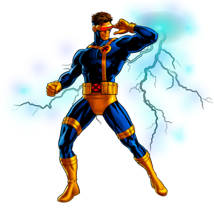

Arquivo mutante / Estudo de interface
Escolha seu
próximo herói.
Oito personagens. Oito maneiras de mudar o mundo.
Toque, clique ou use as setas

01 / 08
Ciclope
Emite poderosas rajadas ópticas, controladas com a ajuda de seu visor.
Estudo derivado do curso Dev em Dobro. Personagens e ilustrações pertencem aos respectivos titulares.